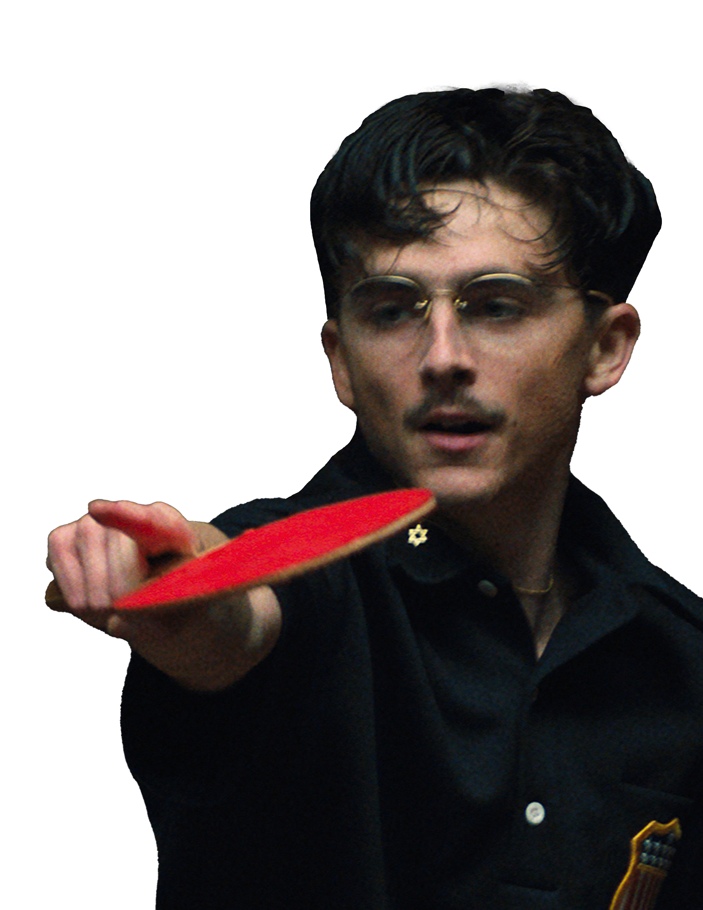
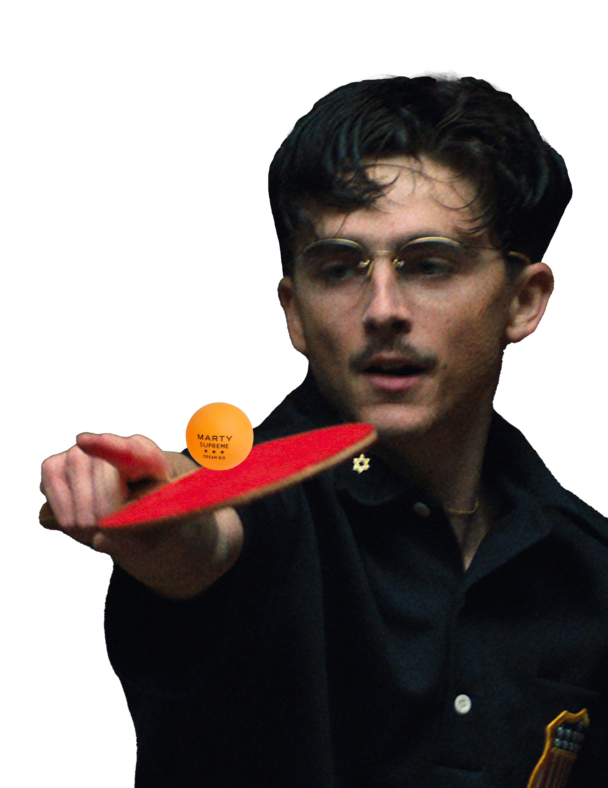
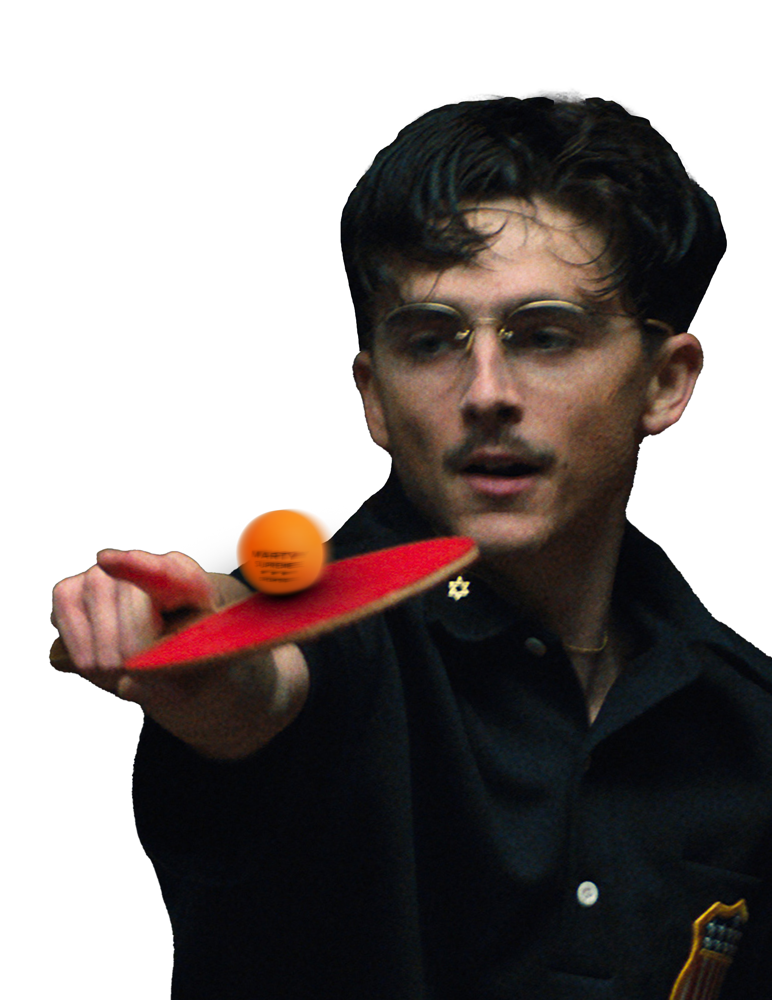

Magazine

Marty Supreme is a film centered on obsession, discipline, and emotional consequence. This editorial design project interprets those themes through restrained typography and cinematic pacing, presenting the film as a prestige magazine feature. The layout prioritises hierarchy, rhythm, and narrative sequencing over visual excess, allowing structure and imagery to communicate intensity without spectacle.
Project Overview
The challenge was to design a magazine feature for a prestige sports film that felt bold and cinematic while remaining visually restrained. The goal was to communicate obsession through hierarchy, spacing, and sequencing rather than effects or decoration.
Concept & Narrative Structure
The editorial is structured as a progression rather than a collection of spreads. Each page advances Marty’s psychological state—from certainty and discipline to fixation and emotional fracture. Typography remains controlled throughout, mirroring the character’s internal logic, while image pacing gradually becomes more unstable as momentum overtakes reflection.
Rather than presenting obsession as chaos, the design frames it as order taken too far. Alignment, repetition, and consistency are used deliberately to reflect how certainty becomes both strength and limitation.
Selected Editorial Spreads
Inside Marty Supreme
This spread establishes tone through restraint. Large margins and controlled hierarchy allow the image to dominate, positioning typography as structure rather than decoration.


Portraits of Obsession
As the narrative intensifies, image density increases. Multiple moments coexist on a single spread, creating visual tension while maintaining typographic control. Obsession becomes visible not through chaos, but through accumulation — intimacy, performance, and escape compressed into a disciplined grid.


Typography & Visual System
Typography functions as the editorial backbone of the project. Headings are reserved for narrative shifts, while body copy remains dense and consistent, reinforcing the sense of discipline that defines Marty’s character.
The Cost of Certainty
The final page abandons momentum in favour of stillness. For the first time, certainty no longer functions as direction but as exposure. The restrained layout leaves space for emotional weight, allowing the image to carry what the structure can no longer contain.
“What certainty protected him from is finally visible.”

Gallery
From Photoshop To InDesign


